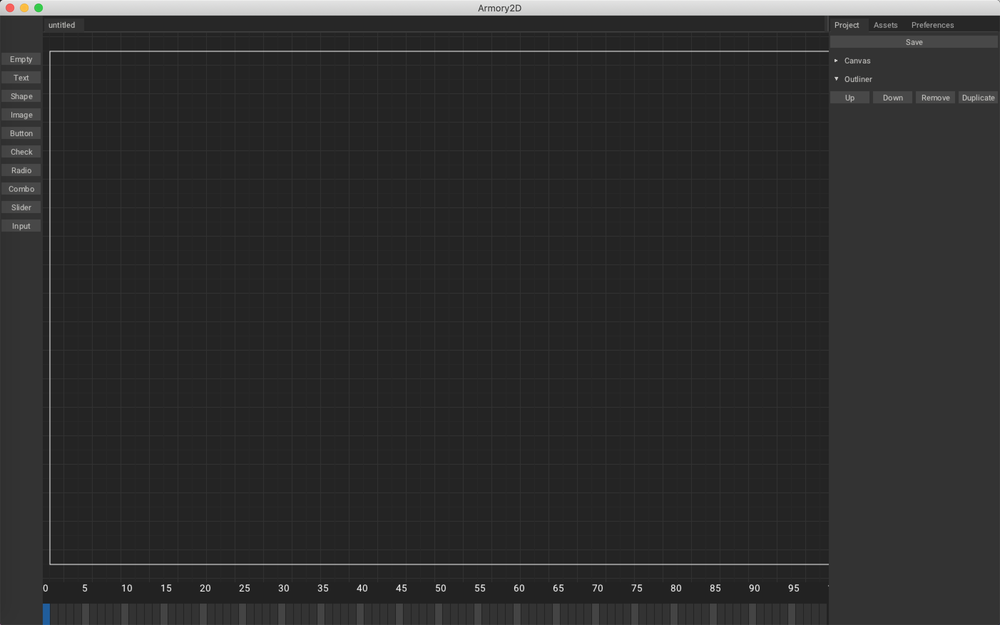
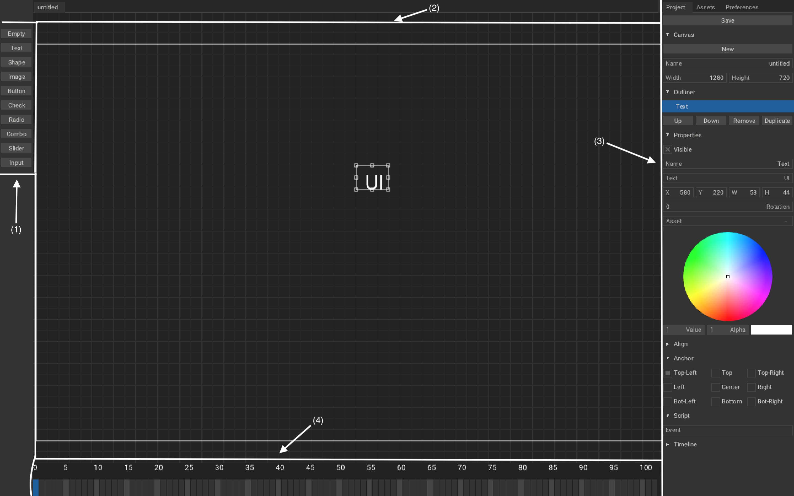
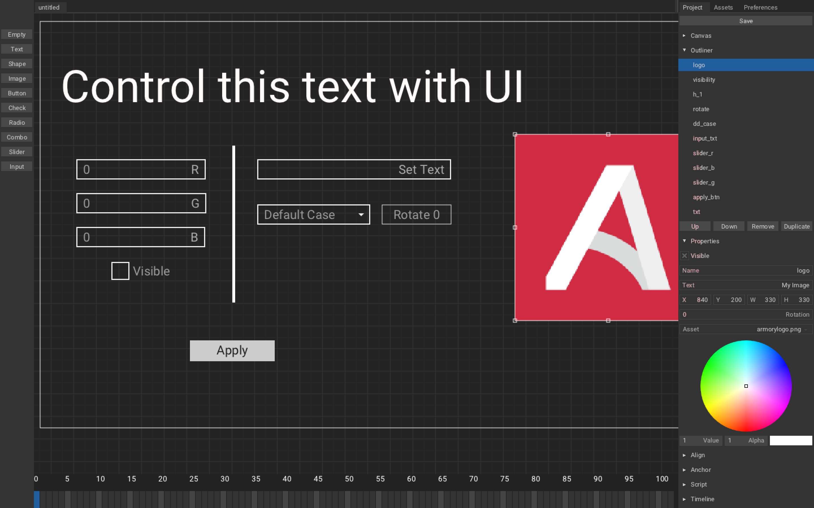
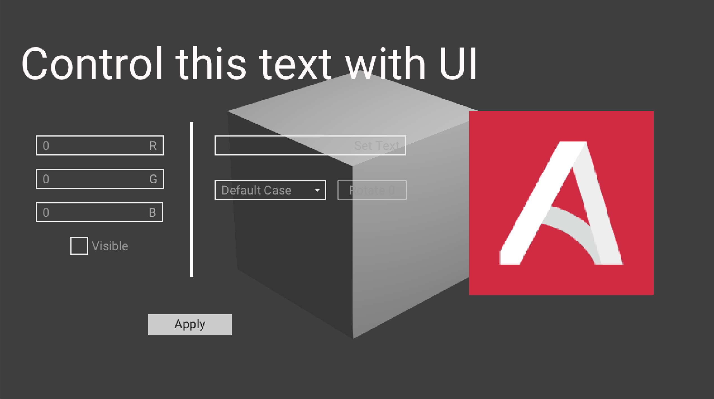

In this tutorial, we will create canvas using Armory2D, learn about it and then add and control canvas's
element using haxe.
Our Goal:
Fire up Armory3D project, once you have it up, go to Scene - Armory Scene Trait, create new
Canvas Trait, name it UI and hit Edit Canvas. A window named Armory2D
should pop-up:

Let study its user interface:

-
This is where you can add elements from.
-
This is
Canvas's area, where you arrange for you window. -
This is
Projecttab, where you configure you elements. -
Save: Saves the canvas. -
Canvas: Create new canvas with given name, width and height. -
Outliner: This is layer. You can pressUp/Downto move it up/down the layer,Removeto remove the element,Duplicate, to duplicate. (Pretty obvious) -
Properties: Adjust visibility, name, text, transform, color of an selected element. -
Align: (WIP). -
Anchor: Anchor element to selected side. -
Script: This is used to handle event. -
Timeline: (WIP). -
This is
Assetstab, where you import assets in: -
Import Assets: Import assets using zui's file dialogue. -
X: Remove assets. -
This is
Preferencestab, where you configure Armory2D: -
UI Scale: Scales the UI. -
Grid Size: Scale the grid. -
Grid Snap Position:Snap element to grid position. -
Grid Snap Bounds:Snap element to grid bounds. -
VSync: Enable/disable VSync. -
Console: (WIP). -
This is Timeline, used to animate elements, but currently it is WIP, so we will ignore it for now.
Let add elements:

Text: Add Texttxt, We will control this by using below UI (sliders, input, etc).Sliders: Add 3 slidersslider_r,slider_g,slider_bto control rgb value of thetxt.Input: Add inputinput_txt, we will use this to controll the text oftxt.Combo: Add combo(aka dropdown), set text asDefault Case;Upper Case;Lower Case,we will use it make ourtxtcase-sensitive or not.Radio: Add radio,rotate, set text asRotate 90;Rotate 180;Rotate 0,we will use this set rotation of our text.Check: Add checkboxvisibility, we will use this to maketxtvisible/invisible.Button: Add buttonapply_btn, and setapply_btninScript - Event,we will use this to apply the change made using UI.Image: Addlogo, we use this to for image assets.Shape: Addh_1, we use this add shape.
option1;option2;option3 because it seperate options
by ;.
When you run the game, you should see something like this:

Now, we will create Haxe Trait to control our UI created in UI Canvas. Head over to
Scene - Armory Scene Trait in Blender and create new Haxe Trait and name it
CanvasController and hit Edit Script.
// In CanvasController.hx
package arm;
import iron.Scene;
import armory.trait.internal.CanvasScript;
import armory.system.Event;
class CanvasController extends iron.Trait {
// Initialize canvas as CanvasScript.
var canvas:CanvasScript;
public function new() {
super();
notifyOnInit(function() {
// Set canvas as CanvasScript trait from active scene.
canvas = Scene.active.getTrait(CanvasScript);
// Add event listener with string 'apply_btn' and call 'applyCanvas' function.
Event.add("apply_btn", applyCanvas);
});
}
public function applyCanvas() {
trace("Applied!");
}
}
If you were to run this and press Apply button, it should print Applied!. If it do,
then our basics are working and we are ready to do more work.
Now to change color of text using slider_r/slider_g/slider_b silder
and enable/disable visibility using visibility checkbox:
//In CanvasController.hx
~
import kha.Color;
import zui.Canvas.TElement;
~
class CanvasController extends iron.Trait {
var canvas:CanvasScript;
// Initialize text as TElement.
var text:TElement;
public function new() {
super();
notifyOnInit(function() {
canvas = Scene.active.getTrait(CanvasScript);
//get element from canvas with string 'txt'.
text = canvas.getElement("txt");
Event.add("apply_btn", applyCanvas);
});
}
public function applyCanvas() {
//Only call set_'s funtions when button is pressed.
set_rgb();
set_visibility();
}
public function set_rgb() {
//Get value from UI using getHandle().
var r = canvas.getHandle("slider_r").value;
var g = canvas.getHandle("slider_g").value;
var b = canvas.getHandle("slider_b").value;
//Set text color from float r,g,b.
text.color = Color.fromFloats(r, g, b);
}
public function set_visibility() {
//Get checkbox's selected bool value.
var is_selected = canvas.getHandle("visibility").selected;
// if isn't selected than keep invisible else visible.
if (!is_selected){
text.visible = false;
}else{
text.visible = true;
}
}
}
Now we will get input from input_txt and case sensitivity from dd_case and set Text
txt according to it.
//In CanvasContoller.hx
~
class CanvasController extends iron.Trait {
~
public function new() { ~ }
public function applyCanvas() {
set_rgb();
set_visibility();
set_input_txt();// 4
}
public function set_rgb() { ~ }
public function set_visibility() { ~ }
public function set_input_txt() {
//Get input value.
var input_txt = canvas.getHandle("input_txt").text;
//Get selected value from drop down with position.
var caseSensitivity = canvas.getHandle("dd_case").position;
// 3
if (caseSensitivity == 1){
text.text = input_txt.toUpperCase();
}else if (caseSensitivity == 2){
text.text = input_txt.toLowerCase();
}else{
text.text = input_txt;
}
}
}
And lastly rotation of Text txt using Radio visibility:
~
class CanvasController extends iron.Trait {
~
public function new() { ~ }
public function applyCanvas() {
~
set_rotation();
}
public function set_rgb() { ~ }
public function set_visibility() { ~ }
public function set_input_txt() { ~ }
public function set_rotation(){
//Just like dropdown's case use position to get selected value.
var rotate = canvas.getHandle("rotate").position;
//Set text's rotation according to selected radio's value.
if (rotate == 0){
text.rotation = 0;
}else if (rotate == 1){
text.rotation = 90 * 3.14 / 180;
}else if (rotate == 2){
text.rotation = 180 * 3.14 / 180;
}
}
}
Now on playing it, you should get our goal.
🎉There we go, our tutorial is finished 🎉
If anything goes wrong, then you can check the source code